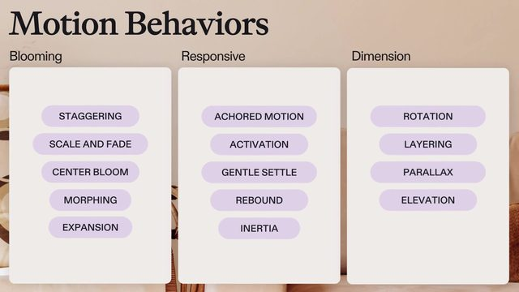

点封面在页面里播放（Vimeo / YouTube / X 需要代理；Vimeo 若没自动开始，再点一下播放键）。觉得好就点「喜欢」，有想法就写在下面的框里保存，我每天出日报前会读，存进偏好和审美库；会多找同类，但每天仍保持类型分散。
目录 01 雪国のローカル線（冬沢）02 make it pop: 003 glazed03 upcoming trip animation04 SANTAL（Awwwards 11-15 当日最佳）05 Preymaker（Awwwards 11-14 当日最佳）06 There's something weird inside Mars07 Letters trading weight08 Etsy Motion Identity09 Tidal Motion Branding－ 剔除（3 条）拆 细拆：雪国慢车的 6 个镜头、内外交替和进站停稳
01 代码动画 3D质感
雪国のローカル線（冬沢）
SF Create（@sfc43588） · X 2026-11-16 【看过视频】
X 31.5 秒全片完整看过（看片工具），下面有细拆
作者说全部用代码写（three.js）
站牌字是场景里的模型：主站名「冬沢」，平假名「ふゆさわ」；没有后期字幕
好在哪 31.5 秒，6 个镜头内外交替。车厢过道慢慢往前推，地板反出顶灯；切到车外，红车厢在雪林里开过，车灯扫亮积雪；再切回窗台：一罐茶、三个橘子，窗外树影往后飞。进站时车明显减速，停稳后窗外正对「冬沢」站牌。最后一镜完全固定，只有路灯里的雪在飘可借 工具讲解若要一段「到达」过场：内外各切三次，每镜 4 到 6 秒，最后停在一个空站台。窗台放一两件真物件，雪地上留几串脚印，场景就不会像没人住过的模型。下面有细拆
展开全文
02 代码动画 字体版式 3D质感
make it pop: 003 glazed
jhey（@jh3yy） · X 2026-11-16 【看过画面（抽帧）】
X 抽了 12 帧。字体未识别（紧凑的粗无衬线）
引用了自己 11 月 13 日的帖，这次是系列第 3 条 glazed
好在哪 21 秒，黑底粗白字「make it pop」。只有「pop」做成一层粉色糖釉，表面有小碎花和一圈软光晕，像玻璃糖纸。画面里能看到鼠标，应该是可交互的可借 标题里只需强调一个词时，把那一个词做成有厚度的釉面或玻璃材质，其余字保持平面白字，不要整句都加特效
展开全文
03 UI动效
upcoming trip animation
jonasnaimark / 60fps（@60fpsdesign） · X 2026-11-16 【看过画面（抽帧）】
全长只有 2.8 秒，抽了 9 帧
界面字体未识别（像 SF Pro 一类）
好在哪 2.8 秒。手机里一张行程卡片，日历从 5 翻到 3，旁边写着 Mexico City trip。白底、图标少，焦点只有这一张卡可借 工具实测讲日程或参数变了时，不必切走画面，就让卡片上的数字翻一页，观众能一眼看出改了什么
展开全文
04 字体版式 转场
SANTAL（Awwwards 11-15 当日最佳）
The First The Last / Awwwards · Awwwards 2026-11-15 【看过画面（抽帧）】
看的是 Awwwards 8 秒预告片，不是整站逐页浏览
字体未识别（细和极粗的无衬线对比）
站点用了 WebGL、GSAP
好在哪 8 秒网站预告。黑白、大量留白。先一行小字「Architecture is understood layer by layer」，再切到几乎全黑的「Until it becomes white」，然后超大的 SANTAL 压上来可借 作品介绍页的开头可以学它：先用一句小字把概念说完，再让名字以近乎满屏的字重压上来，中间留足够空白
展开全文
05 转场 3D质感 字体版式
Preymaker（Awwwards 11-14 当日最佳）
DashDigital、Mathis Humbert / Awwwards · Awwwards 2026-11-14 【看过画面（抽帧）】
看的是 Awwwards 8 秒预告片
字体未识别
站点有预载、菜单和遮罩转场
好在哪 8 秒。雪山公路上立着牌子，标题 OUR TRUSTED PARTNERS。画面被一块折纸似的几何色块擦掉，折成一只飞鸟剪影，再落到白底的合作方名单可借 从实拍或 3D 场景切到名单、资料页时，用一个简单几何图形把前一幕折起来、变成 logo 或图标，比淡入淡出干净
展开全文
06 知识讲解 数据可视化
There's something weird inside Mars
Cleo Abram · YouTube 2026-11-14 【看过画面（抽帧）】
抽了 12 帧（71 秒竖屏）
字体未识别（粗无衬线 + 荧光绿标题）
同类短视频 Saturn’s rings 今天没收，避免同一作者占两席
好在哪 约 71 秒竖屏。先用带箭头的彩色火星标出北半球，再拿奥林帕斯山跟珠峰比高度，然后剖开星球画地幔温差，黄箭头指出哪一边更热。口播和箭头线一起出现可借 讲「两边不一样」时，在地图或剖面上直接画箭头，不要改用一堆数字表格。箭头出现的时机跟口播对齐
展开全文
07 字体版式 代码动画
Letters trading weight
Codegrid（@codegridweb） · X 2026-11-14 【看过画面（抽帧）】
作者标了 #gsap
字体未识别（有衬线对比的标题字）
好在哪 18 秒，米白底。一行字「MAKE YOUR TYPE DO SOMERSAULTS」，单词的字重在细和粗之间对调，词的位置也在重新排队，像字母自己在翻跟头可借 标题不必整句飞入。让需要强调的词加粗、其余变细，两个状态来回换，节奏跟着朗读走
展开全文
08 UI动效 字体版式
Etsy Motion Identity
Vucko · It's Nice That 2026-11-12 【看过画面（抽帧）】

vucko.co ↗ 看的是案例页里的 Motion Behaviors（6 秒）和 Type（2.5 秒）片段
完整 sizzle 下载中断，没有拿它当依据
字体未识别
页面没有官方播放器，封面以外请点进案例页
好在哪 把 Etsy 的动效收成一套词：Blooming（错开出现、中心绽放）、Responsive（吸附、回弹）、Dimension（旋转、视差）。6 秒示范里，照片、橙色方块和 Etsy 标志按这些词各做一遍可借 给自己的视频定 3 个动作名字就够了（比如错开出现、轻轻回落、拉开层次），全片只重复这三种，比每次新发明一种转场更统一
展开全文
09 MG 字体版式
Tidal Motion Branding
Vucko（@motionimo 转发） · X 2026-11-13 【看过画面（抽帧）】
抽了 12 帧（55 秒成片）
字体未识别
片尾带工作室联系方式，是案例卷不是广告片
好在哪 55 秒品牌动效卷。菱形色块在模糊色板里移动，切到手机和手表上的播放界面，再落到「Music sounds better here.」和 LET'S WORK TOGETHER可借 做栏目包装时，先定一个很简单的几何符号（这里是菱形），让它在界面、色块和结尾标语里反复出现，识别会比每次换新图形更快
展开全文
剔除（3 条） Ilya Miskov（@ilyamiskov） · 转发反应视频，画面偏暗，几乎看不出完整动效
Cleo Abram · 和 Mars 同一作者、同一套口播短视频；Mars 的箭头和剖面更接近已赞过的手法，今天只留一条
Roof Studio、Pedro Allevato / Stash · Stash 有报道，手绘水彩方向也对，但找不到可下载的公开成片，没法先看再选
今日细拆 · 代码动画
31 秒、6 个镜头：用代码写出一趟雪夜慢车 【看过视频】 SF Create（@sfc43588）今天在 X 发的「雪国のローカル線」，横版 31.5 秒，作者说全部用代码写。看片工具完整看完了全片。好学的不是特效，而是 6 个镜头老实地内外交替、每镜 4 到 6 秒，以及进站时那条跟得上刹车声的减速。
结构（31.5 秒） 0:00–0:05 车内。机位在过道正中，慢慢往前推。车厢是空的，两侧蓝色座椅、顶部风扇随着推进换透视 0:05–0:11 硬切到车外俯拍。红车厢在厚雪针叶林里向右开，摄像机跟在右上方，速度略慢于车，车头灯扫亮前方积雪 0:11–0:15 切回车内窗台特写。窗台上有一罐茶和三个橘子，窗外雪林往后退。镜头极慢地再往前推一点 0:15–0:21 车外地面广角。列车从画面左边进来，经过一棵挂着橙果的枯树和几座亮着灯的木屋，再从右边驶出 0:21–0:27 再回车内靠窗。能看到前排蓝色座椅靠背。车明显减速，窗外从雪野变成房屋，停稳后正对站牌「冬沢 / ふゆさわ」 0:27–0:31.5 最后一镜完全固定：空站台、一盏路灯、停好的列车。画面上还在动的只有灯柱光柱里飘着的雪 节奏 6 个镜头，每个大约 4 到 6 秒，没有快剪。结构是内–外–内–外–内–外，偶数镜看环境，奇数镜回到人的位置（虽然车上没有人）。
快的东西只有窗外风景和飘雪；慢的是镜头本身。进站那段（0:21–0:27）把速度平滑减到零，没有一下刹死。停稳之后还留约 4.5 秒给空镜。
转场 全部硬切，没有淡入淡出 切的时候靠列车自己的运动把动势接上：车外是车在往前开，切回车内时窗外风景还在往后走，所以硬切不跳 声音也跟着硬切：车外风声和轨道声更空，车内变得闷，只剩规律的哐当声 光、材质和空间 车外是冷蓝夜色加高色温车灯；车内是偏暖的淡黄顶灯。最后站台那盏路灯有一层体积光，雪花穿过光柱时会亮一下 车厢地板反光很重，能倒映灯管和座椅，一下子把空间撑起来。座椅蓝布和白色头套是哑光，和地板对比清楚 车窗边缘有一点结霜，玻璃上能隐约看到车内的反射 车顶积雪有厚度，不是一层贴图。地面雪有起伏。航拍林子用了深度雾，远树被蓝灰雾挡住，前中后景分得开 0:27 的雪地里有几串脚印。没有后期字幕，唯一的字是场景里的站牌，边缘有锈和剥落 声音 车外：风声和轨道摩擦更响、更空；车内：被滤闷，剩下规律的哐当 0:21–0:27 进站时，金属刹车声的音量和音调跟着画面一起往下减，远处还有道口铃声 停稳之后轨道声消失，只剩很轻的气闸嘶嘶和一点风。没有配乐，也没有旁白 对照动效实现规则 转场：全程硬切，符合规则第 4 节「默认用硬切」。这里没有配乐拍点，改用列车运动和刹车声当「切点」 镜头：每段 4–6 秒的缓推或跟拍，没有匀速突然起停，符合第 5 节「镜头运动也要缓动」 进站减速：是一条平滑减到零的物理曲线，不是把速度设成 0。对应第 5 节「落下、碰撞这类运动用物理，再烘焙成确定的逐帧数据」 质感：靠明确的灯光衰减、地板和布料的粗糙度对比，以及体积光里的雪，而不是均匀的全局光。符合第 6 节对质感的要求 颜色：冷蓝（室外）加暖黄（室内灯），强调色几乎只有车灯和站台灯。没有再加一套霓虹 字体和颜色 没有后期字幕。站牌是场景里的模型字，主站名「冬沢」，平假名「ふゆさわ」，下一站只露出一个「川」，其余看不清。
#1A2A40 室外夜空和远雾：蓝灰#C9A36A 车厢顶灯：暖黄#3B5A8A 座椅蓝（近似）#E8F2FF 雪和车灯：冷白
在 Three.js / Remotion 里怎么做（我的做法建议） 先写一条列车沿轨道走的位置曲线，进站前 6 秒用 ease-out 减到 0，停住后再持 4–5 秒。同一段曲线同时驱动摄像机目标和刹车声的音量 6 个镜头预先排进时间轴，按 5 / 6 / 4 / 6 / 6 / 4.5 秒切，全部硬切。切的帧要对上列车还在动的时刻，不要切在车已经停死的点（最后一镜除外） 车内只用几盏点光源加地板 MeshStandardMaterial（metalness 低、roughness 很低），座椅 roughness 抬高。不要上很匀的环境光 车外加 FogExp2 或深度雾，远树用简单几何加颜色衰减，不要把远处也做成高精度模型 雪用确定的粒子（用种子随机），最后一镜让路灯做一点体积光或光柱贴片，只有进光柱的粒子提高亮度 窗台静物（茶、橘子）和站台脚印是单独摆进去的，不要程序化铺满。站牌做成一张做旧贴图，不要后期烧字幕 放进鱼知道的片子里怎么用 工具实测里如果要一段「从准备到开始用」的过场：不要用炫的转场。学它做 6 个短镜头、内外（或近景和全景）交替，每镜 4 到 6 秒。桌上放一杯水、一根线，就像这里的茶和橘子。最后停在一个固定空镜上再开始口播。进站那种减速，可以对应进度条或加载从快到停，声音一起减弱。
看原帖 ↗
X（@sfc43588、@jh3yy、@60fpsdesign、@awwwards、@codegridweb、@cleoabram、@motionimo、@ilyamiskov、@codrops、@greensock、@KernelChai、关键词搜索）、Stash、Motionographer、Codrops、Awwwards、It's Nice That、Vucko 案例页、YouTube（Cleo Abram、Vox、Kurzgesagt、Johnny Harris、Apple 等，RSS 在此环境 404，改用 yt-dlp 列表）
 X
X